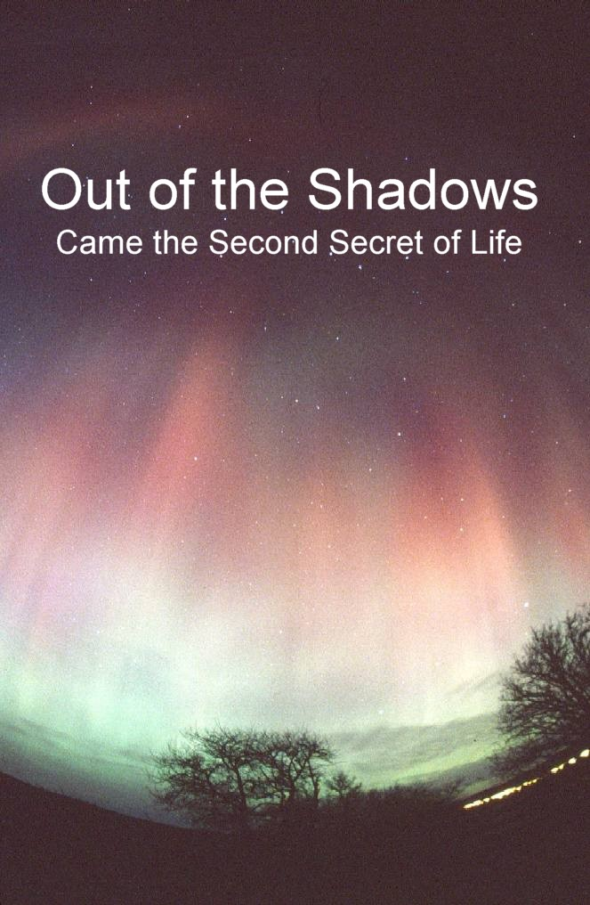

|
|
|
.... but they all missed one critical everyday event!  Welcome
FIRST GREAT BRITISH DISCOVERIES OF THE THIRD MILLENNIUM
Welcome to a radical new website.First published on 14th July 2003.A website dedicated to the advancement of knowledge, science, and humankind.This is a modern story of discovery ... out of the shadows.
A soldier of the Cold War who enjoyed reading astronomy, physics and history decided light-heartedly one night to try and find a link to the basic secrets of life. A piece of fun to while away the guard duty hours under the stars. When careers from soldier to bank clerk eventually ended in retirement, a chain of discoveries began. Working on one promising theory, with sensitive electronic equipment and various homemade antennae some of the secrets of life began to unfold. Electric induction from space and movement (planetary orbits) were the first few half-open doors showing promise. Peering behind these doors each discovery became more fascinating than the one before until, ACCIDENTALLY, a strange frequency in the middle of the night "Energy X" changed the fun into serious research. In a short time frame of only five years a whole new understanding of life arriving from space began to emerge. How water arrived on the Earth, compliments of the Moon. The mysteries between light, electricity, magnetism and gravity became clear. Our connection to the stars and a possible hint of past life on the planet Venus could be seen. It is often said that discoveries are made because their time has arrived. Did something decide the time had arrived to reveal Energy X? Is this a message here and now at the beginning of the third Millennium?
How did life really start - was it in a rock-pool? Does OUT OF THE SHADOWS provide some answers to this?
|